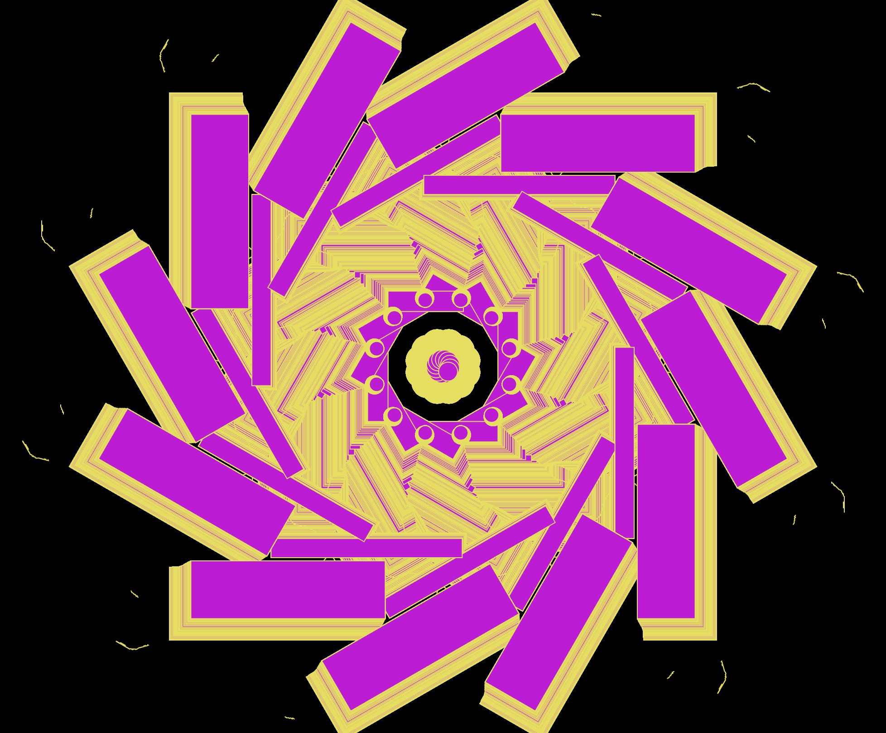

Inspiration
When I saw that the term I was assigned was "Drag", the first image associated with this action was moving an item from one place to another. Secondly, I was reminded of an EqualParts project called "Drawing App" that Ha mentioned in the first session, where the user can drag simple geometric shapes to make continuous copies to create interesting patterns and lines.

So I thought it might be more interesting if each drag could not only duplicate the image in the trajectory but also produce the same effect on a symmetrical surface like a kaleidoscope. In my search for a solution, I found a project called Qode Kaleidoscope (click on the image to experience it), which created an interactive website that allows users to change the pattern and color of the kaleidoscope by clicking, hovering or dragging, with each unique and vibrant theme corresponding to a specific project.
Early Experiments
At p5js.org, I found the code for this kaleidoscope, which allows drawing simple kaleidoscope patterns made of lines and modifying the strokeweight.
The original programming file already had a bit of a kaleidoscopic feel to it, but I wanted to add more randomness. So I removed all the buttons except for the save function and added randomness to strokeWeight, symmetry, strokeColor and also made the screen background change color after each refresh.
Iterations
With the addition of color, I felt this was one step closer to what I wanted to achieve. On top of the original line elements, I tried to introduce more variations on stroke colours after following another Youtube tutorial.
However, the ranbow color kind of conflicts with my original aspiration of random stroke color. Besides, I also experimented with different geometric shapes within the kaleidoscope pattern which I felt even closer to the interaction I want.
Likewise, the shape fills are also displayed in random colors. So each time user refresh the website, the canvas will be clear. Users are able to create their own unique kaleidoscope with a randow "brush".